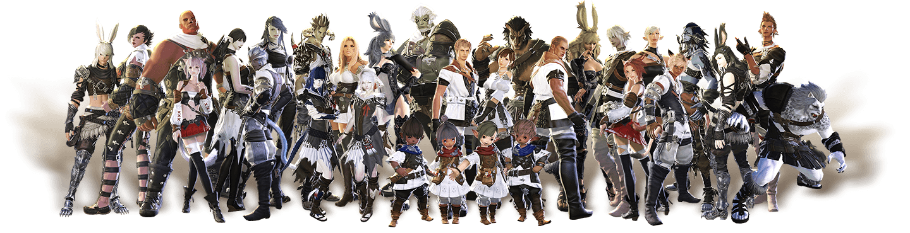

Have you heard of the critically acclaimed MMORPG Final Fantasy XIV? With an expanded free trial in which you can play through the entirety of A Realm Reborn and the award winning Heavensward expansion up to level 60 for free with no restrictions on playtime?
Well if not you're about to.
Final Fantasy XIV is one of the most consistently popular installations in the Final Fantasy franchise. It's a classic fantasy setting hybridized with more modern technological aesthetics. The player character follows a chosen hero role, meets a large cast of supporting characters, and explores an expansive world map that unfolds as the story progresses. There are multiple races/species one can choose from and a wide selection of aesthetic customizations for a player character.
Combat Roles

Tank
Tanking in this game is what we lovingly refer to as "masochism". You're a damage sponge, getting knocked into next Tuesday so your fragile, squishy peers don't rage quit and never speak to you again. Fortunately this means you're above reproach, and if any DPS dare complain you pull too many enemies you can just turn off enmity and let the mobs get them.

Heal
So you have a god complex and the idea of holding the lives of your peers in your hands is appealing? Do you want to be the healer with a gun meme? This is the role for you. Much like the tank, healers can do no wrong. Tanks will occasionally press you into working harder by leaving enmity off or refusing to mitigate the damage they're taking, in which case you're well within your rights to let them sweat it out a bit without heals. If they die, they die. What does it matter that the rest of the party is next? They'll learn their lesson.

DPS
Damage dealers! Magical or physical, ranged or up close and personal. You'll be the one putting the big numbers up on the baddies. Sadly, everyone hates you just a little bit. But hey, it's okay, you have three times as many job options as the other roles. Sometimes you even get a fancy hat.
Creative Roles

Craft
Not a fan of all that violence? Bored out of your mind grinding levels fighting the same three enemies for six hours, but somehow you can find your zen sitting in the same place making four hundred metal ingots in a row? Boy howdy do I have good news for you.

Gather
Have you ever wanted to perform back breaking manual labor for fun? Labor you can't even benefit from yourself unless you spend just as long crafting items from the materials you hoard? Well, at least you can sell this mountain of rocks to a jeweler and get rich...eventually?
Collecting
The real appeal of this game, and Square knows it. Have a little guy follow you around everywhere you go! Call the coolest monsters to give you a lift to the next city over! Be it a little sparrow that flits to your shoulder, a literal tamed god, a stuffed animal come to life, a horrifying monstrosity lurking over your shoulder, with minions and mounts you have HUNDREDS of options available. Oh, you wanted that one? Yeah, sorry, it's only available for purchase from the online store for USD $15.99.
Decorating
You can craft furniture and decorations for your very own house! If you win the lottery. And yes, the odds are near as slim. Maybe just go play the Sims.
Multiplayer
You mean you expected me to talk about the MMO part of the critically aclaimed MMORPG? Gross. If you're SOCIAL I guess you can fight in giant boss battles with friends, or form a company with them, or roleplay with strangers future friends. But really, what kind of a freak are you? Who utilizes the multiplayer elements in a multiplayer game?
